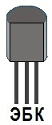

Транзистор S8050
S8050 - биполярный маломощный высокочастотный транзистор n-p-n структуры. Применяется для усиления звука (обычно в усилителях класса B), в схемах коммутации в качестве электронного ключа для небольших нагрузок.
Комплементарной парой для S8050 является транзистор S8550 c p-n-p структурой.
Тип корпуса ТО-92 или SOT-23.

Рис. 1 - Цоколевка транзистора S8050
Таблица 1
| Параметр | Значение |
|---|---|
| Макcимально допустимое напряжение коллектор-эмиттер Uкэо max, не более | 20 В |
| Макcимально допустимое напряжение коллектор-база Uкбо max, не более | 40 В |
| Макcимально допустимое напряжение эмиттер-база Uэбо max, не более | 5 В |
| Макcимальный постоянный ток коллектора Iк max, не более | 0,7 А |
| Максимальный обратный ток коллектора Iкбо, не более (при Uкб max= 40 В и Iэ=0); |
0,1 мкА |
| Максимальная рассеиваемая мощность, не более | 1,0 Вт |
| Коэффициент усиления транзистора по току (h21э) | 85...300 |
| Граничная частота коэффициента передачи тока fгр | 100 МГц |
| Ёмкость коллекторного перехода Ск, не более | 8 пФ |
| Рабочаяая температура | -65...+150 °C |
Условные обозначения электрических параметров транзисторов
Аналоги S8050
зарубежные аналоги:
9013, 9014, 2N5551